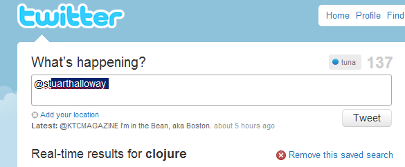

Tuna
Do you use twitter? Is twitter.com your favorite web based twitter client? Do you hate looking for or typing twitter usernames only to have it misspelled? If you answered 'yes' to any of these questions then I've got a treat for you.
Tuna is a browser bookmarkletextension that unobtrusively provides twitter screen name auto complete functionality for status text input on twitter.com.
To start using Tuna, drag the icon below to your 'Bookmarks Toolbar' to create the bookmarklet. When you are on twitter.com, all you need to do is click on the 'tuna' bookmarklet. If you have the Greasemonkey Firefox add-on installed (recommended). You can install Tuna by simply clicking here.
tunaicon
Tuna uses screen names of users in your activity stream for autocomplete candidates, and will remember screen names of users it has come come across while you are on twitter.com by storing them locally in your browser using HTML5 Web Storage. Unfortunately, using bookmarklets has a certain drawback. Clicking on links that reload pages on twitter.com, such as the twitter logo or the 'following'/'followers' links has the effect of disabling Tuna . You would then have to click on the 'tuna' bookmarklet to re-enable Tuna. This can be solved by installing the Greasemonkey Firefox add-on. Once installled, click here to install Tuna.
Tuna does not save, collect, or send any information to any remote servers. All data is stored locally in your browser. Tuna is open sourced and resides on github.
If you would like to make any suggestions, feedback, or show some support you can follow me on twitter here.
Features:
Autocomplete twitter user names

Expand shortened urls/preview media

Tuna is not affiliated with Twitter in any way, shape, or form.